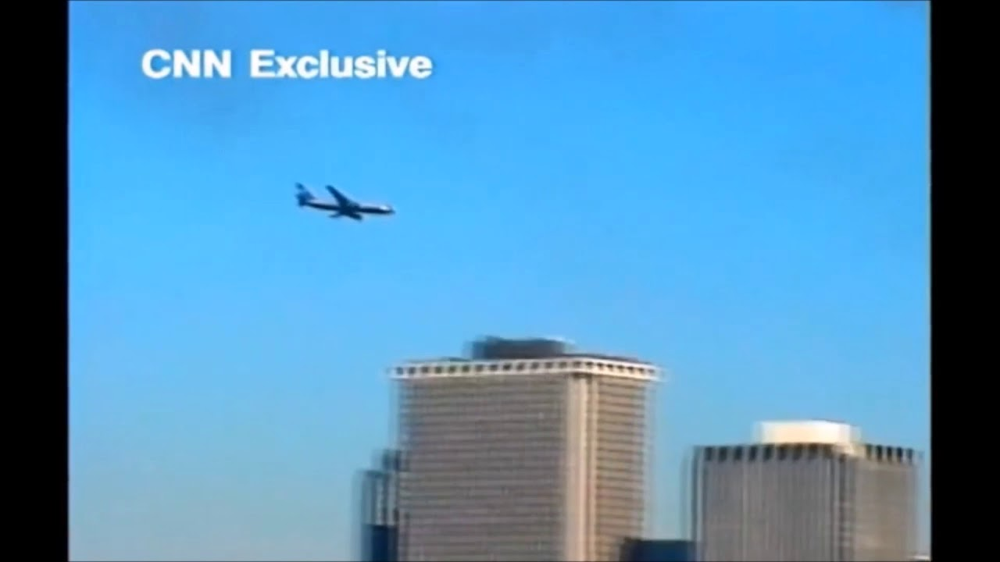

Страшная ситуация 11 сентября в 2011
В 11 сентября, широко известные как 9/11, были четырьмя скоординированными терактами Исламистские террористические атаки смертников осуществленные Аль-Каидой против США во вторник, 11 сентября 2001 года. ВВ то утро, 19 террористов захватила четыре коммерческих самолетов, которые должны были лететь из Новая Англия и Срединно-Атлантический регионы Восточное побережье Для Калифорния. Угонщики врезались первыми двумя самолетами в башни-близнецы Всемирного торгового центра в Нью-Йорке, двух из пяти самых высоких зданий в мире в то время и нацелила следующие два полета на цели в пределах или вблизи Вашингтона, округ Колумбия, при нападении на столицу страны. Третьей группе удалось врезаться в Пентагон, штаб-квартиру Министерство обороны США в Округе Арлингтон, штат Вирджиния, в то время как четвертый самолет потерпел крушение в сельской Pennsylvania после бунта пассажиров. В результате терактов погибло около 3000 человек и спровоцировалась многолетняя глобальная война с террором.
Первым ударом стал самолет рейса Американки , которые врезались в Северную башню комплекса Всемирного торгового центра в Нижний Манхэттен в восемь Шестнадцать минут спустя, в 09:03 во Всемирном торговом центре Южная башня пострадала от Рейса 175 авиакомпании United Airlines Оба 110-этажных небоскреба рухнули в течение часа и сорока одной минуты, приведшие к разрушению оставшихся пяти сооружений в комплексе Всемирного торгового центра, а также к повреждению или разрушению различных других зданий, окружающих башни. Третий рейс, Рейс 77 авиакомпании American Airlines, врезался в Пентагон в 09:37, вызвав частичное обрушение. Четвертый и последний рейс, Рейс 93 авиакомпании United Airlines, летел в направлении столицы. Предупрежденные о предыдущих нападениях пассажиры предприняли ответные действия в попытке захватить контроль над самолетом, вынудив угонщиков разбить самолет в Городке Стоникрик филд, недалеко от Шенксвилла в 10:03 того же утра. Следователи определили, что целью рейса 93 был либо Капитолий Соединенных Штатов , либо Белый дом.
 Через несколько часов после терактов Центральное разведывательное управление установило, что ответственность за них несет "Аль-Каида". Соединенные Штаты официально ответили на это развязыванием войны с террором и вторжением в Афганистан с целью свержения талибана, который отклонил условия США по изгнанию "Аль-Каиды" из Афганистана и экстрадиции ее лидеров. Ссылка США на статью 5 Североатлантического договора — единственное ее применение на сегодняшний день — призвала союзников бороться с "Аль-Каидой". Когда силы вторжения США и НАТО проходили через Афганистан, лидер "Аль-Каиды" Усама бен Ладен скрылся в Белых горах, избежав пленения западными войсками. Хотя бен Ладен первоначально отрицал какую-либо причастность, в 2004 году он официально взял на себя ответственность за эти нападения. Мотивы, приводимые "Аль-Каидой", включали поддержку США Израиля, присутствие военных баз США в Саудовской Аравии и санкции против Ирака. Почти десятилетняя охота за бен Ладеном завершилась 2 мая 2011 года, когда он был убит во время военного рейда США после того, как его выследили в его резиденции в Абботтабаде, Пакистан. Война в Афганистане продолжались еще восемь лет, пока в феврале 2020 года не было заключено соглашение о выводе американских войск и войск НАТО из страны, а последние военнослужащие вооруженных сил США покинули регион 30 августа 2021 года, что привело к возвращению к власти талибов.Не считая 19 угонщиков самолетов, в результате нападений погибло 2977 человек, еще тысячи получили ранения и возникли существенные долгосрочные последствия для здоровья, а также был нанесен ущерб инфраструктуре и имуществу на сумму не менее 10 миллиардов долларов. Многие описывали их как самый смертоносный террористический акт в истории человечества и они остаются самым смертоносным инцидентом как для пожарных, так и для сотрудников правоохранительных органов в истории Соединенных Штатов, в результате которого погибло 340 человек и 72 человека из каждой организации. Гибель людей в результате столкновения рейса 11 закрепила за собой звание самой смертоносной авиакатастрофы в истории авиации, за которой последовало число погибших при крушении рейса 175. Разрушение Всемирного торгового центра и его окрестностей нанесло серьезный ущерб экономике США и вызвало потрясения на мировом рынке. Многие другие страны усилили антитеррористическое законодательство и расширили свои полномочия правоохранительных органов и разведывательных агентств. Зачистка территории Всемирного торгового центра (в просторечии "Ground Zero") заняла восемь месяцев и была завершена в мае 2002 года, в то время как Пентагон был отремонтирован в течение года. После задержек с проектированием комплекса замены, строительство Работа Единого Всемирного торгового центра началась в ноябре 2006 года; он открылся в ноябре 2014 года. К памятникам терактам относятся Национальный мемориал и музей 11 сентября в Нью-Йорке, Мемориал Пентагона в округе Арлингтон, штат Вирджиния, и Национальный мемориал рейса 93 на месте крушения в Пенсильвании.
Подробнее про 11 сентября 2011 года